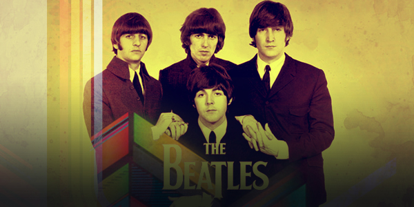

Tributo a los Beatles.

The Beatles fue una banda de pop/rock inglesa activa durante la década de 1960, y reconocida como la más exitosa comercialmente y la más alabada por la crítica en la historia de la música popular.12345 Formada en Liverpool, estuvo constituida desde 1962 por John Lennon (guitarra rítmica, vocalista), Paul McCartney (bajo, vocalista), George Harrison (guitarra solista, vocalista) y Ringo Starr (batería, vocalista). Enraizada en el skiffle y el rock and roll de los años 1950, la banda trabajó más tarde con distintos géneros musicales, que iban desde las baladas pop hasta el rock psicodélico, incorporando a menudo elementos clásicos, entre otros, de forma innovadora en sus canciones. La naturaleza de su enorme popularidad, que había emergido primeramente con la moda de la «Beatlemanía», se transformó al tiempo que sus composiciones se volvieron más sofisticadas. Llegaron a ser percibidos como la encarnación de los ideales progresistas, extendiendo su influencia en las revoluciones sociales y culturales de la década de 1960.
Agrega un Comentario:
Navegación por los planetas.

Según la definición, el sistema solar consta de ocho planetas: Mercurio, Venus, Tierra, Marte, Júpiter, Saturno, Urano y Neptuno. En cambio Plutón, que hasta 2006 se consideraba un planeta, ha pasado a clasificarse como planeta enano, junto a Ceres, también considerado planeta durante algún tiempo, ya que era un referente en la ley de Titius-Bode, y más recientemente considerado como asteroide y Eris, un objeto transneptuniano similar a Plutón. Ciertamente, desde los años setenta existía un amplio debate sobre el concepto de planeta a la luz de los nuevos datos referentes al tamaño de Plutón (menor de lo calculado en un principio), un debate que aumentó en los años siguientes al descubrirse nuevos objetos que podían tener tamaños similares. De esta manera, esta nueva definición de planeta introduce el concepto de planeta enano, que incluye a Ceres, Plutón, Haumea, Sedna, Makemake y Eris; y tiene la diferencia de definición en (3), ya que no ha despejado la zona local de su órbita y no es un satélite de otro cuerpo.